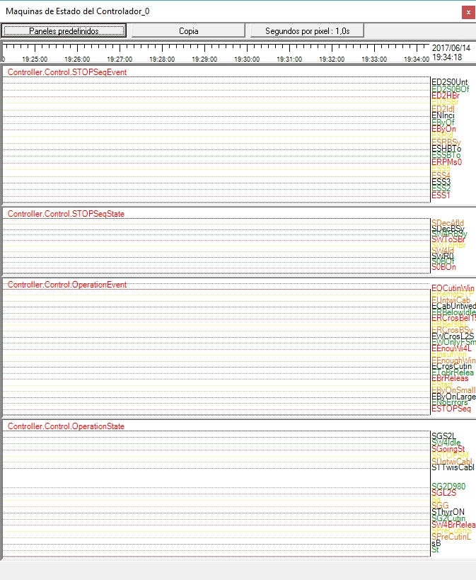

La figura seguente mostra il pannello chiamato 'State Machines', che contiene 4 canali.

1.Il primo 'canale' visualizza un segnale corrispondente alultimo eventoricevuto dalMacchina di stato di sicurezzaimplementato nel Controller. VediMacchina di sicurezza.
2. Il secondo canale visualizza un segnale corrispondente alvalore attuale dila macchina di stato di sicurezzastato.
3. Il terzo canale visualizza un segnale corrispondente alultimo eventoricevuto dalMacchina di funzionamento dello statoimplementato nel Controller. VediOperazione State Machine.
4. Il quarto canale mostra un segnale corrispondente alvalore attuale dila macchina di stato dell'operazione.
Questo pannello è molto utile per seguire il protocolli d'azione implementato nel Titolare per rispondere a diverse circostanze e operazioni.